Hierarchical designs
Covered last time — two-factor ANOVA:
Note
✅ Key idea from last lecture
In a factorial design, every level of B appears under every level of A. Today: what happens when B is only ever nested inside one specific level of A?
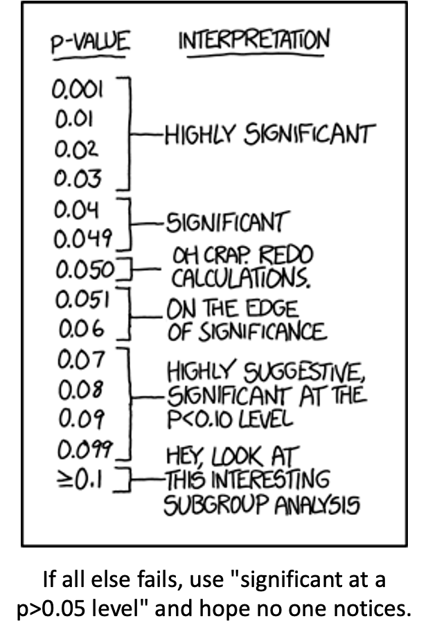
= 0.1, captioned 'If all else fails, use significant at a p>0.05 level and hope no one notices' — a joke about p-hacking and misusing significance thresholds.">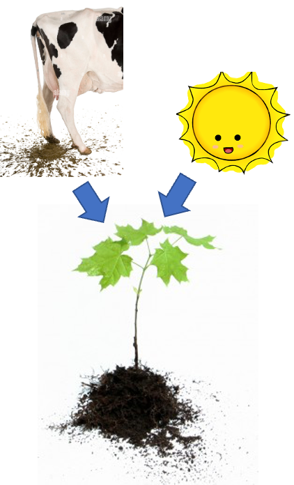
Consider two factors, A and B:
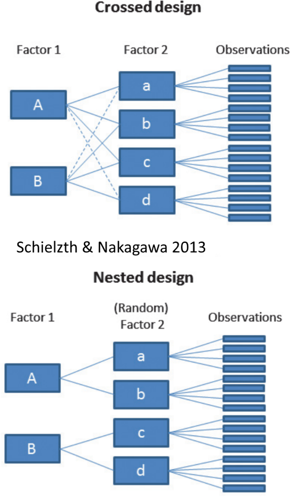
Factorial designs: both factors are typically fixed (but not always).
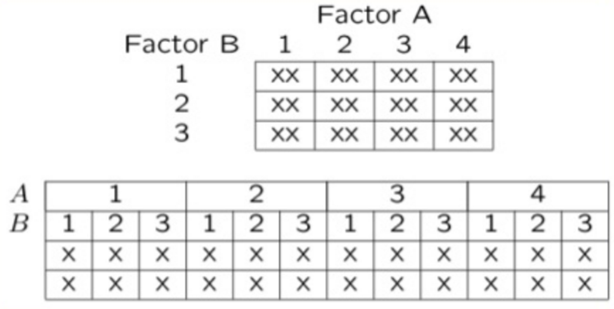
Effects of light level on growth of seedlings of different size:
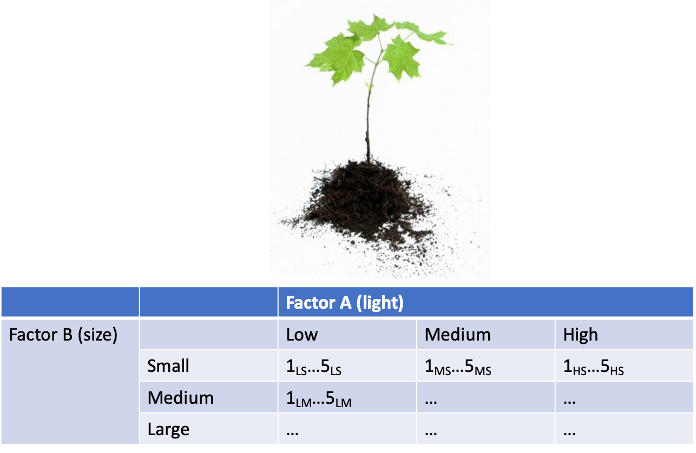
Effects of food level and tadpole presence on larval salamander growth:
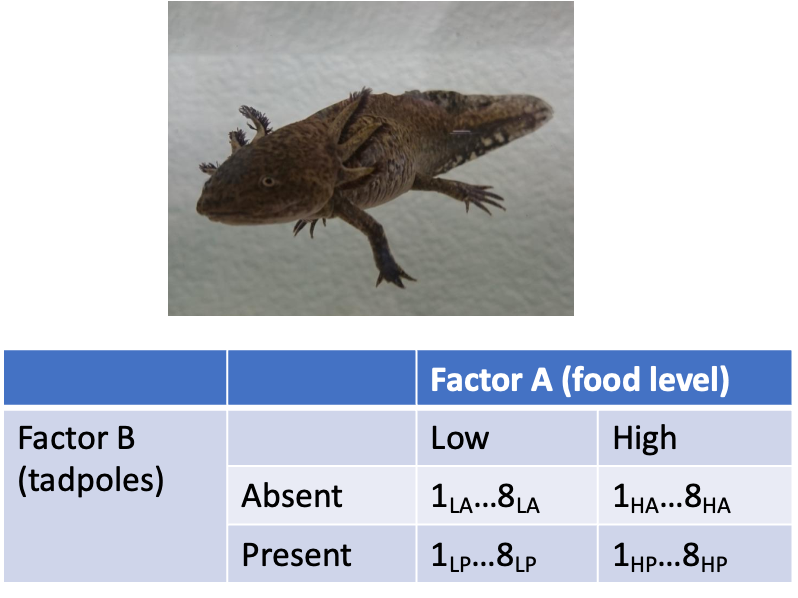
Effect of season and density on limpet fecundity:
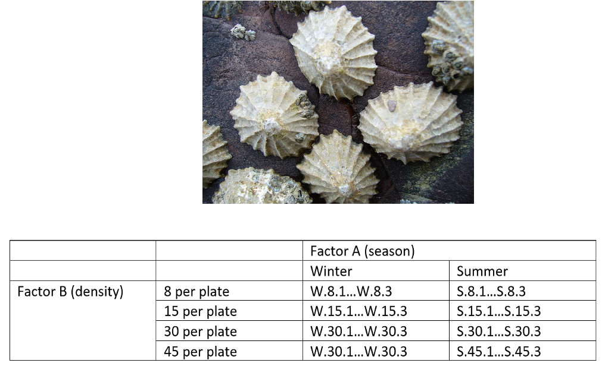
Nested designs cover: nested design examples, the linear model, analysis of variance, null hypotheses, unbalanced designs, assumptions, mixed-model ANOVA.
Nested designs: Factor A is usually fixed; Factor B is usually random.
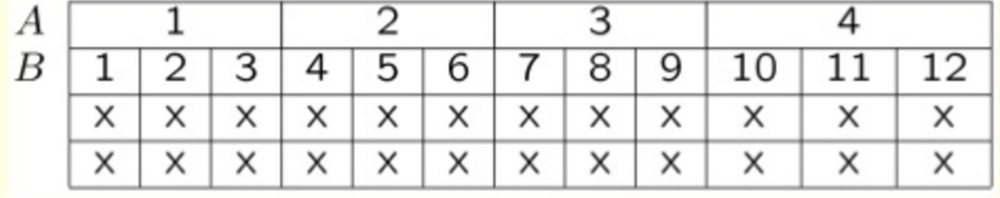
Study on effects of enclosure size on limpet growth:
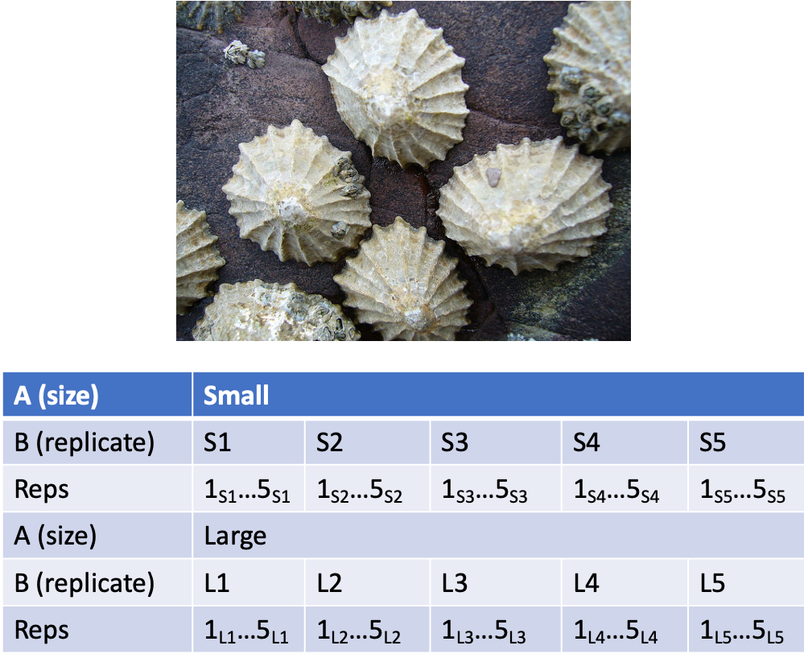
Study on reef fish recruitment:
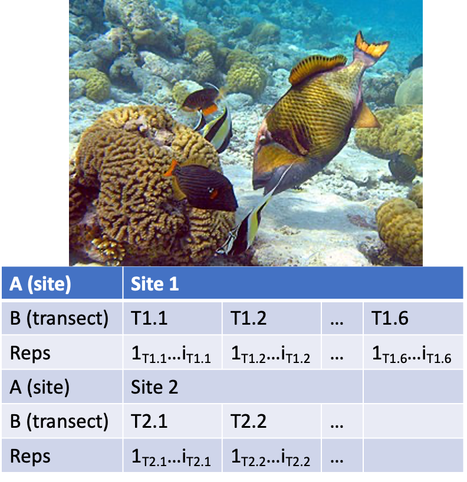
Effects of sea urchin grazing on biomass of filamentous algae:
This is our worked example for the rest of the lecture.
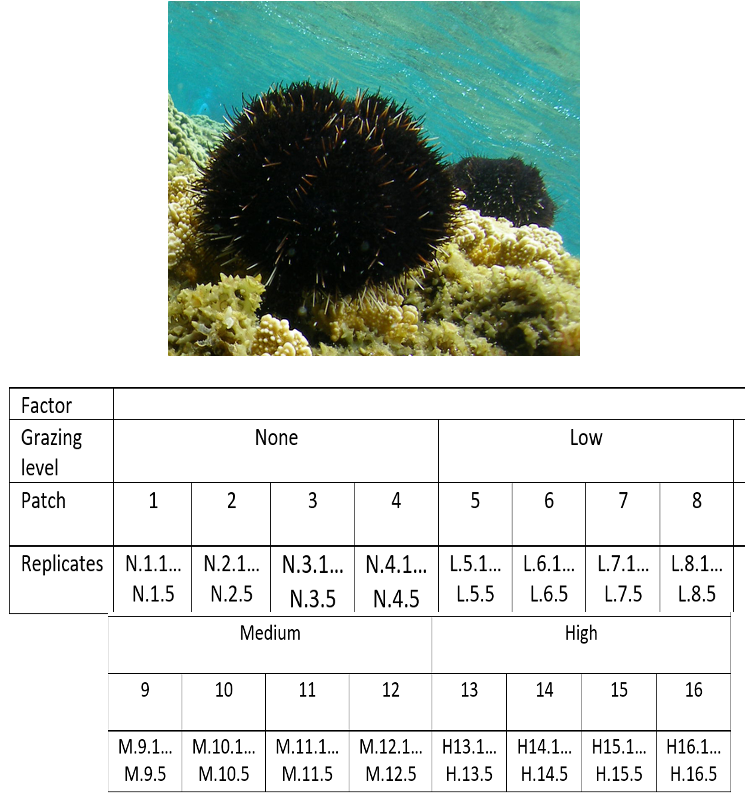
Consider a nested design with:
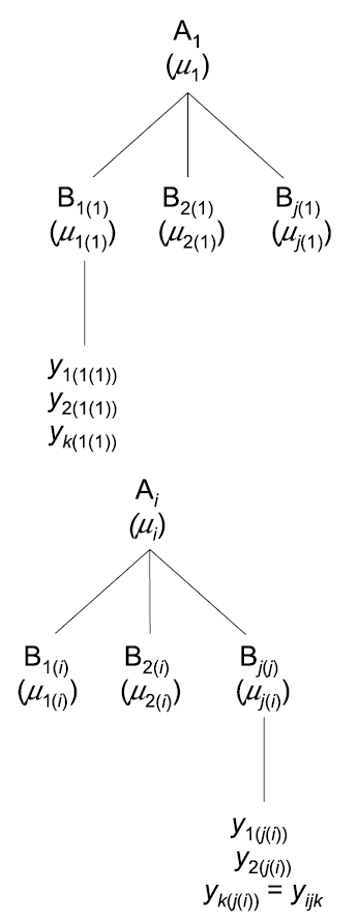
We can calculate several means:
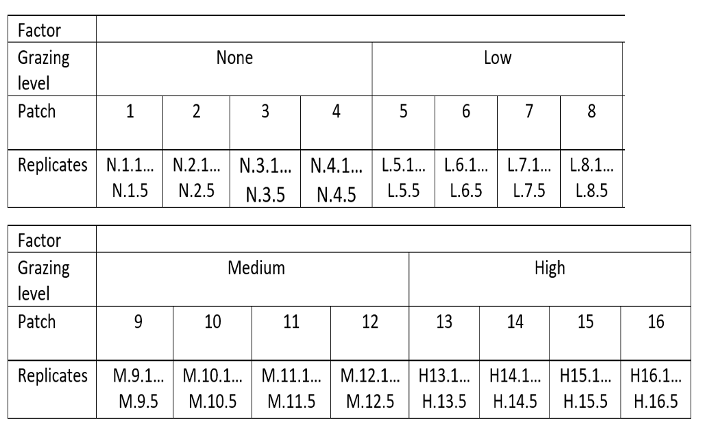
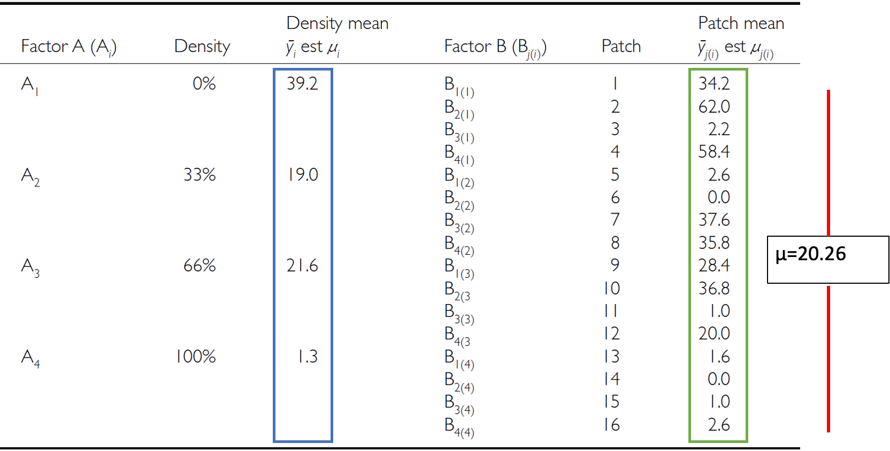
\[y_{ijk} = \mu + \alpha_i + \beta_{j(i)} + \varepsilon_{ijk}\]
Tip
🖐 Notice
This looks almost identical to the two-way ANOVA model — the difference is entirely in the subscript: \(\beta_{j(i)}\), not \(\beta_j\). B only exists inside a specific A.
\[y_{ijk} = \mu + \alpha_i + \beta_{j(i)} + \varepsilon_{ijk}\]
Note
✅ Key idea
B being random is the whole point of nesting: you don’t care about these specific patches — you care about patch-to-patch variability in general.
\[y_{ijk} = \mu + \alpha_i + \beta_{j(i)} + \varepsilon_{ijk}\]
Tip
🖐 Notice
The residual is measured against the cell mean (this specific patch), not the treatment mean — that’s what makes it “nested,” arithmetically.
One quadrat’s distance from the grand mean splits into three pieces, not two:
\[\underbrace{(Y_{ijk} - \bar{Y})}_{\text{total}} = \underbrace{(\bar{Y}_i - \bar{Y})}_{A} + \underbrace{(\bar{Y}_{ij} - \bar{Y}_i)}_{B(A)} + \underbrace{(Y_{ijk} - \bar{Y}_{ij})}_{\text{residual}}\]
Square and sum over all 80 quadrats:
\[SS_{total} = SS_A + SS_{B(A)} + SS_{resid}\]
On the urchin data: 54 781 = 14 429 + 21 242 + 19 110 — the same three numbers aov() prints in Part 8.
Note
The new row is the whole point
A one-way ANOVA has no \(SS_{B(A)}\) row — that variation lands in the residual. Here it is bigger than the treatment effect, and it is what Factor A gets tested against.
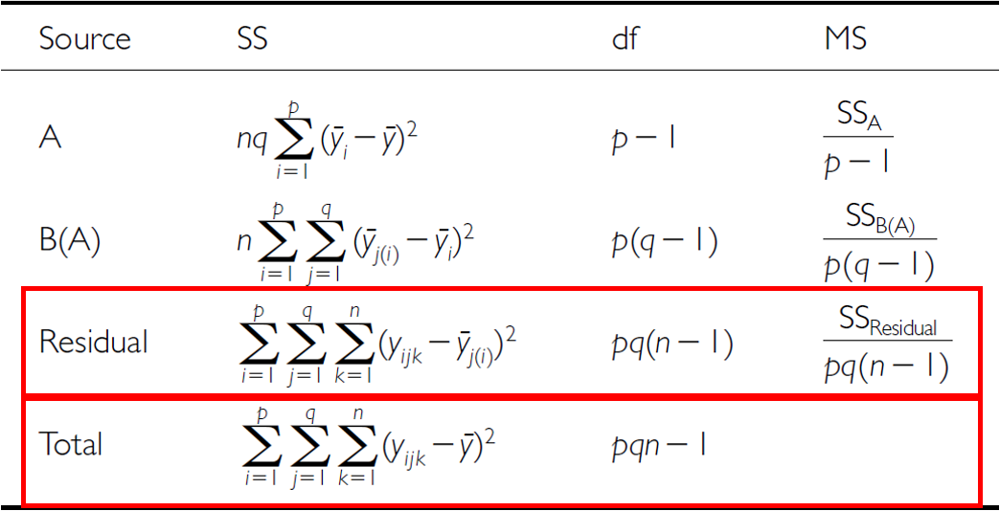
As before, we partition the variance in the response variable using SS. \(SS_A\) is the SS of differences between the mean in each level of A and the overall mean.
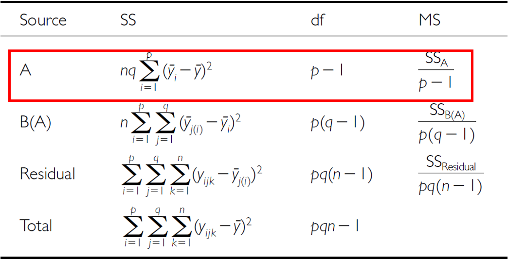
\(SS_B\) is the SS of the difference between the mean in each level of B and the mean of the corresponding level of A, summed across all levels of A.
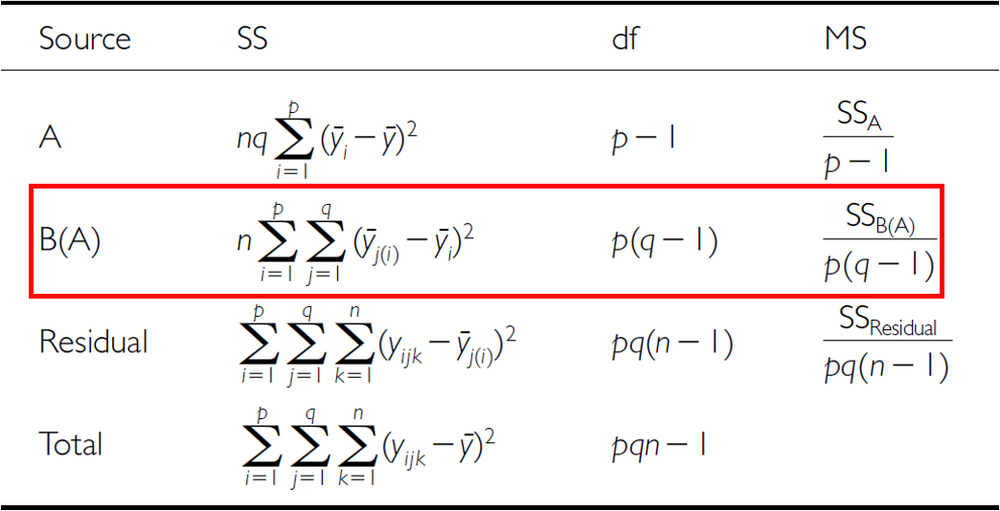
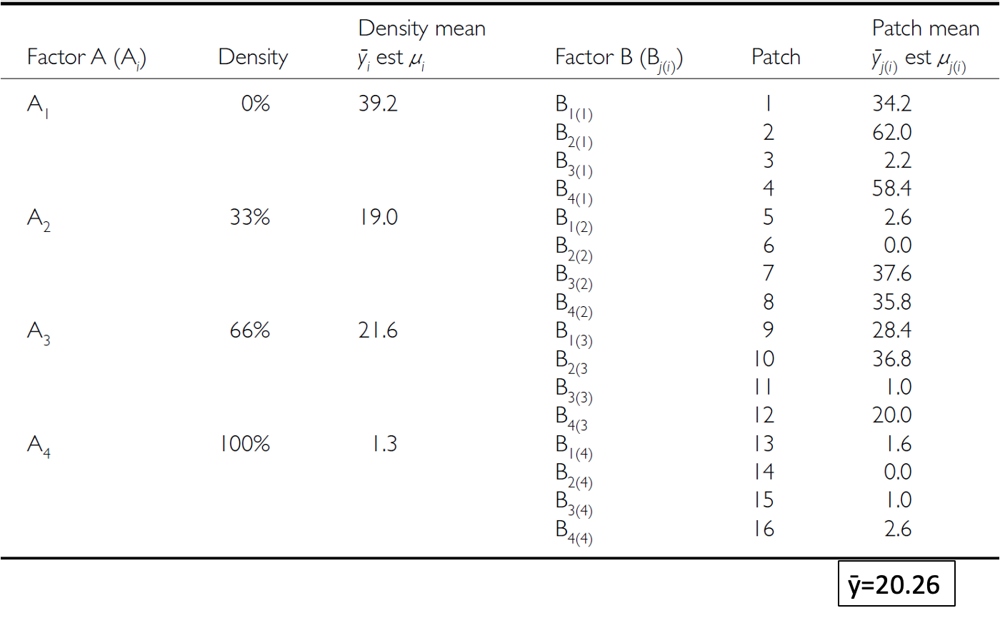
Two hypotheses are tested on values of MS. 1. No effects of factor A — assuming A is fixed:
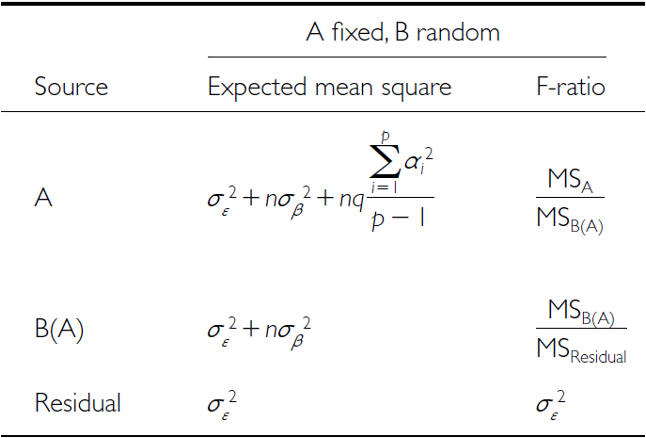
2. No effects of factor B nested in A — assuming B is random:
Conclusion:
“Significant variation between replicate patches within each treatment, but no significant difference in the amount of filamentous algae between treatments.”
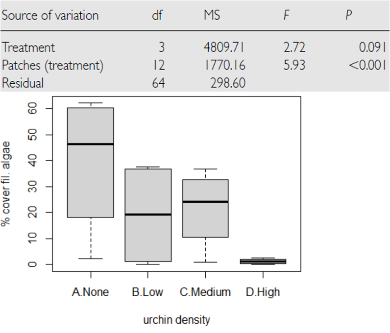
Unequal sample sizes can arise from:
The second kind is the one that bites. Patch means stop being equally precise, so:
aov(Error(...)) loses its exact F-testsThe principled fix is a mixed model — Week 11.
As usual, we assume: equal variance, normality, no outliers, independence of observations.
Equal variance + normality need to be assessed at both levels:
Warning
⚠️ Watch out!
This is the part people most often get wrong: checking assumptions on the raw data isn’t enough for a nested design — you need to check them at the level each hypothesis test actually operates on.
This analysis examines the effects of varying sea urchin densities on the percentage cover of filamentous algae. The experiment was designed with:
Note
📖 Reference
Quinn & Keough (2002), Experimental Design and Data Analysis for Biologists — this dataset and analysis follow their treatment of the sea urchin/algae example.
The data frame contains: patch (random patches 1–16 where treatments were applied), treat (urchin density treatment), quad (replicate quadrats within each treatment-patch combination), algae (percentage cover of filamentous algae — the response variable).
## Data
## # A tibble: 6 × 4
## treat patch quad algae
## <fct> <fct> <dbl> <dbl>
## 1 100% 1 1 0
## 2 100% 1 2 0
## 3 100% 1 3 0
## 4 100% 1 4 6
## 5 100% 1 5 2
## 6 100% 2 1 0
##
##
## Treatment levels:
## [1] "0%" "33%" "66%" "100%"## Summary statistics by treatment:
## # A tibble: 4 × 7
## treat n mean sd se min max
## <fct> <int> <dbl> <dbl> <dbl> <dbl> <dbl>
## 1 0% 20 39.2 28.7 6.41 0 83
## 2 33% 20 19 25.7 5.74 0 71
## 3 66% 20 21.6 25.1 5.62 0 79
## 4 100% 20 1.3 3.18 0.711 0 13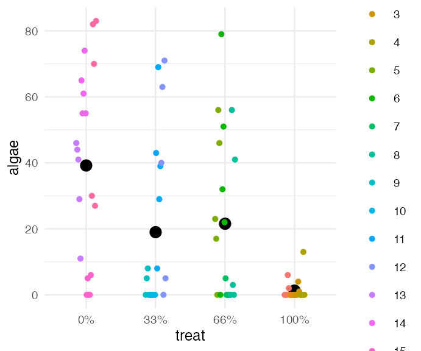
In this experimental design, patch is nested within treat because each patch received only one treatment level — a hierarchical design where the effect of patches must be considered within each treatment (Quinn & Keough 2002).
We’ll use a traditional nested ANOVA. You could make this easy by averaging algae per patch and running a one-way ANOVA on the 16 patch means. On a perfectly balanced design that gives the identical F, df and p — but it throws away the within-patch variance, and the moment the design stops being balanced that shortcut starts costing you. We come back to both halves of this at the end of the lecture.
This first attempt is really a regular factorial ANOVA — not appropriate, since it’s pseudoreplicated. Also, the F-value for Treat is using \(MS_{resid}\) when it should use \(MS_{treat:patch}\).
u_fact_model <- aov(algae ~ treat + treat:patch, data = u_df)
cat("Factorial model summary:\n\n")
## Factorial model summary:
summary(u_fact_model)
## Df Sum Sq Mean Sq F value Pr(>F)
## treat 3 14429 4810 16.108 0.0000000658 ***
## treat:patch 12 21242 1770 5.928 0.0000008323 ***
## Residuals 64 19110 299
## ---
## Signif. codes: 0 '***' 0.001 '**' 0.01 '*' 0.05 '.' 0.1 ' ' 1# Error(patch) -- not Error(treat:patch). Patch IDs are already unique
# (1-16) and each patch sits in exactly one treatment, so naming the patch
# alone is enough. Writing treat:patch asks for 4 x 16 = 64 combinations
# when only 16 exist, which makes R warn "Error() model is singular".
# Both give identical numbers; this one does it without the warning.
u_nested_model <- aov(algae ~ treat + Error(patch), data = u_df)
cat("Correctly specified nested ANOVA:\n\n")
## Correctly specified nested ANOVA:
summary(u_nested_model)
##
## Error: patch
## Df Sum Sq Mean Sq F value Pr(>F)
## treat 3 14429 4810 2.717 0.0913 .
## Residuals 12 21242 1770
## ---
## Signif. codes: 0 '***' 0.001 '**' 0.01 '*' 0.05 '.' 0.1 ' ' 1
##
## Error: Within
## Df Sum Sq Mean Sq F value Pr(>F)
## Residuals 64 19110 298.6Both models used the same 80 quadrats and produced the same sums of squares. Only the F-test’s denominator changed:
| MS treat | ÷ MS error | = F | p | |
|---|---|---|---|---|
| Naive factorial | 4810 | ÷ 299 (quadrats) | 16.11 | 0.00000007 |
| Nested | 4810 | ÷ 1770 (patches) | 2.72 | 0.091 |
Important
The p-value moved by six orders of magnitude.
The naive model tested the treatment against variation between quadrats within a patch — but quadrats are not what we assigned treatments to. Patches are. 80 quadrats, but only 16 patches: 12 denominator df, not 64.
Note
✅ How to find the right denominator
Ask: what did I randomly assign the treatment to?
That unit — patch here — supplies the error term. Everything measured inside it is a subsample, and subsamples tell you about measurement noise, not about treatment effects.
Tip
🖐 Notice MS(patch) is large
1770 vs 299 — patches genuinely differ from one another. That variability is real biology, and the nested model makes you pay for it. The naive model pretended it was not there.
This is the pine needle problem again, one level up:
| Our pine study | This urchin study |
|---|---|
| 8 needles per side | 5 quadrats per patch |
| within one tree | within one patch |
| 4 trees are the replicates | 16 patches are the replicates |
| 64 rows, n = 4 | 80 rows, n = 16 |
In Week 1 we solved it by averaging each tree to one number. That works, and it is honest.
Note
✅ Key idea
Averaging throws the subsamples away. Nesting uses them — to estimate how noisy your measurements are — while still refusing to count them as replicates. On a balanced design the treatment test comes out the same either way; the variance components never do, and once the design is unbalanced neither does the test.
Warning
⚠️ The limit of aov(Error(...))
This syntax needs a (near-)balanced design. Ours is perfectly balanced — 4 patches per treatment, 5 quadrats per patch — so it works.
Real data usually is not. That is the problem mixed models solve, and it is where we go next.
Three questions, in order. Ask them of your own data before you fit anything.
1. What did I apply the treatment to? → Whole patches. Not quadrats.
2. Does every level of B appear under every level of A? → Patch 7 only ever received the 66% density. It cannot appear under 100%. → No ⇒ nested. (Yes ⇒ crossed/factorial.)
3. How many of those units do I have per treatment? → 4 patches, not 20 quadrats. That is your n.
Tip
🖐 A quick tell
If two rows of your data share a value for the thing you randomized, they are not independent replicates of it.
Two quadrats in patch 3 share patch 3. Two needles on one tree share that tree.
Warning
⚠️ Nested factors are random
We are not asking “is patch 7 different from patch 12?” — those specific patches are of no interest. They are a sample of possible patches, so patch enters as a random effect.
The factor above it (treat) is fixed: those four densities are exactly the ones we care about.
u_emm <- emmeans(u_nested_model, ~ treat)
u_emm
## treat emmean SE df lower.CL upper.CL
## 0% 39.2 9.41 12 18.70 59.7
## 33% 19.0 9.41 12 -1.50 39.5
## 66% 21.6 9.41 12 1.05 42.0
## 100% 1.3 9.41 12 -19.20 21.8
##
## Warning: EMMs are biased unless design is perfectly balanced
## Confidence level used: 0.95
multcomp::cld(u_emm, Letters = letters)
## treat emmean SE df lower.CL upper.CL .group
## 100% 1.3 9.41 12 -19.20 21.8 a
## 33% 19.0 9.41 12 -1.50 39.5 a
## 66% 21.6 9.41 12 1.05 42.0 a
## 0% 39.2 9.41 12 18.70 59.7 a
##
## Warning: EMMs are biased unless design is perfectly balanced
## Confidence level used: 0.95
## P value adjustment: tukey method for comparing a family of 4 estimates
## significance level used: alpha = 0.05
## NOTE: If two or more means share the same grouping symbol,
## then we cannot show them to be different.
## But we also did not show them to be the same.Means from 1.3 % to 39.2 % — a thirty-fold spread — and every one of them shares the letter a.
The SE is 9.41 on every mean, and it comes from \(MS_{B(A)}\), the patch stratum. With only 4 patches per treatment there is simply not enough replication to separate them.
Warning
⚠️ emmeans will warn you
“EMMs are biased unless design is perfectly balanced.” Ours is balanced — 4 patches per treatment, 5 quadrats per patch — so read past it. The warning fires on any aovlist object.
# Collapse all 80 quadrats to the 16 patch means ...
patch_df <- u_df %>%
group_by(treat, patch) %>%
summarise(mean_algae = mean(algae), .groups = "drop")
# ... and run an ordinary one-way ANOVA on those 16 rows
summary(aov(mean_algae ~ treat, data = patch_df))
## Df Sum Sq Mean Sq F value Pr(>F)
## treat 3 2886 961.9 2.717 0.0913 .
## Residuals 12 4248 354.0
## ---
## Signif. codes: 0 '***' 0.001 '**' 0.01 '*' 0.05 '.' 0.1 ' ' 1F = 2.717 on 3 and 12 df, p = 0.091 — identical to the nested model, to every digit. The SS are exactly one fifth, and dividing numerator and denominator by the same 5 leaves F untouched.
Note
✅ What the subsamples bought you
Not df for the treatment test — that was 12 either way. They made each patch’s value more precise, and let you estimate the within-patch variance. For power against the treatment you need more patches: twenty quadrats in four patches is still n = 4.
Important
⚠️ All of this depends on BALANCE — 5 quadrats in every patch. Change that and the equality breaks. Next slide.
# a storm scours all but one quadrat in four patches
thin_df <- u_df %>%
filter(!(patch %in% c(2, 6, 10, 14) & quad > 1))
# nested ANOVA on the thinned data
summary(aov(algae ~ treat + Error(patch), thin_df))[[1]]
## Df Sum Sq Mean Sq F value Pr(>F)
## treat 3 8837 2946 2.25 0.135
## Residuals 12 15713 1309
# the patch-mean shortcut, same data
pm <- thin_df %>% group_by(treat, patch) %>%
summarise(m = mean(algae), .groups = "drop")
anova(aov(m ~ treat, pm))
## Analysis of Variance Table
##
## Response: m
## Df Sum Sq Mean Sq F value Pr(>F)
## treat 3 3174.1 1058.0 2.9628 0.07493 .
## Residuals 12 4285.2 357.1
## ---
## Signif. codes: 0 '***' 0.001 '**' 0.01 '*' 0.05 '.' 0.1 ' ' 1nested aov |
patch means | |
|---|---|---|
| balanced | F=2.72, p=0.091 | F=2.72, p=0.091 |
| unbalanced | F=2.25, p=0.135 | F=2.96, p=0.075 |
Same data — and the shortcut is now the most optimistic.
Important
⚠️ The patch means are no longer equally precise
\[\operatorname{Var}(\bar y_j) = \sigma^2_{patch} + \frac{\sigma^2_{within}}{n_j}\]
A patch with 1 quadrat is far noisier than one with 5 — but the ANOVA on the means treats them as interchangeable, violating its own equal-variance assumption by construction.
To weight them you need \(\sigma^2_{within}\) — which averaging already threw away. That is the cost of losing sight of the variance inside the nested groups.
p = 0.091 says “we could not resolve it.” It does not say “there is nothing there.” The effect size says how big the thing we could not resolve is.
effectsize takes the aovlist straight, and the Group column tells you which error stratum it used — patch, the correct denominator.
eta_squared(u_nested_model)
## # Effect Size for ANOVA (Type I)
##
## Group | Parameter | Eta2 (partial) | 95% CI
## -------------------------------------------------
## patch | treat | 0.40 | [0.00, 1.00]
##
## - One-sided CIs: upper bound fixed at [1.00].
omega_squared(u_nested_model)
## # Effect Size for ANOVA (Type I)
##
## Group | Parameter | Omega2 (partial) | 95% CI
## ---------------------------------------------------
## patch | treat | 0.24 | [0.00, 1.00]
##
## - One-sided CIs: upper bound fixed at [1.00].| Model | partial eta2 | p |
|---|---|---|
| Nested (correct) | 0.40 | 0.091 |
| Naive factorial (wrong) | 0.43 | 0.00000007 |
Important
🖐 Pseudoreplication corrupts the p-value, not the effect size
The wrong model and the right model agree the effect is large — 0.40 against 0.43. What they disagree about, by seven orders of magnitude, is how confident you are allowed to be.
So the honest reading of this experiment is not “urchins do not matter.” It is “a large effect that 4 patches per treatment could not resolve.” That is a power problem, and the effect size is what lets you say so.
Note
How to report this result
“Algal cover did not differ significantly among urchin density treatments (nested ANOVA, F₃,₁₂ = 2.72, p = 0.091), with patches treated as a random factor nested within treatment. Variation among patches within treatments was substantial, accounting for approximately 50% of the total variance (σ²_patch = 294, σ²_within = 299; n = 4 patches per treatment, 5 quadrats per patch).”
The three things people get wrong:
# Variance components, straight from
# the two mean squares
MS_patch <- 1770.2 # Error: patch
MS_within <- 298.6 # Error: Within
n_quad <- 5 # quadrats per patch
var_patch <- (MS_patch - MS_within) / n_quad
var_within <- MS_within
cat("among patches:", round(var_patch, 1), "
")
## among patches: 294.3
cat("within patch: ", round(var_within, 1), "
")
## within patch: 298.6
cat("% among patches:",
round(100 * var_patch /
(var_patch + var_within), 1), "%
")
## % among patches: 49.6 %Tip
🖐 Half the variance is between patches
Ignore that and you are pretending 80 quadrats are 80 independent observations. They are closer to 16.
Important
⚠️ The mistake this lecture exists to prevent
Using the residual mean square as your denominator when the treatment was applied to something coarser than a single measurement.
It inflates F, shrinks p, and it is the most common error in ecological field experiments (Hurlbert 1984).
| Week | Same idea, new tool |
|---|---|
| 1 | 64 needles, but 4 trees |
| 3 | two-stage summarise() |
| 4 | the paired t-test |
| 5 | power: 44 trees vs 7 |
| 9 | nested ANOVA |
Today it finally got its own name and its own model.
Sums of squares were never the problem — the denominator was.
Tip
🖐 Before next class
Take a dataset you actually care about — yours, or one from a paper — and answer the three questions from “How Do I Know If My Design Is Nested?”.
Write down what your true n is. If it is smaller than the number of rows, you have found a nested design.
Note
Up next — Linear Mixed Models
These same data come back with patch as a random effect instead of an error term. Error() is the 1960s way to get the right denominator; a random effect is the modern way — and it handles unbalanced designs, which Error() does not.
Note
📖 On the dataset
The sea urchin grazing data are Andrew & Underwood’s, as analysed in Quinn & Keough Ch. 9. The textbook PDFs are on Canvas.
Tip
🖐 Why no Whitlock & Schluter here
W&S Ch. 18 covers multiple explanatory variables but does not treat nested designs. For this topic, Gotelli and Quinn & Keough are the references.